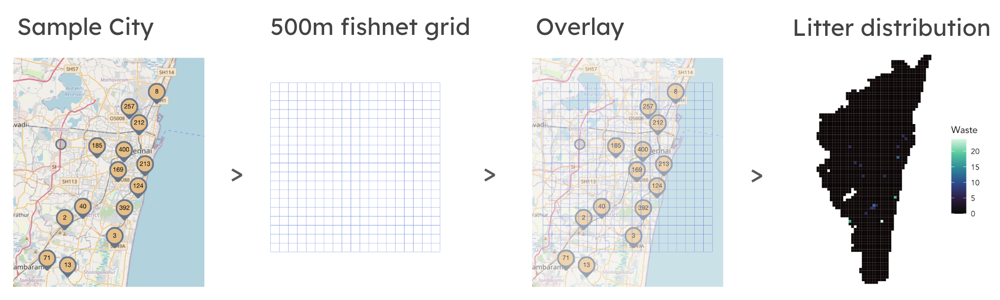
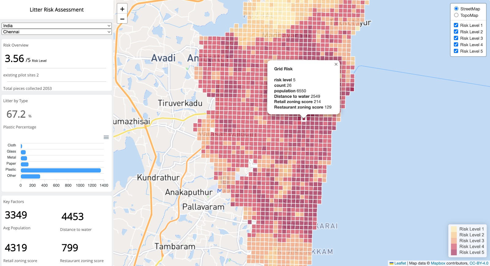
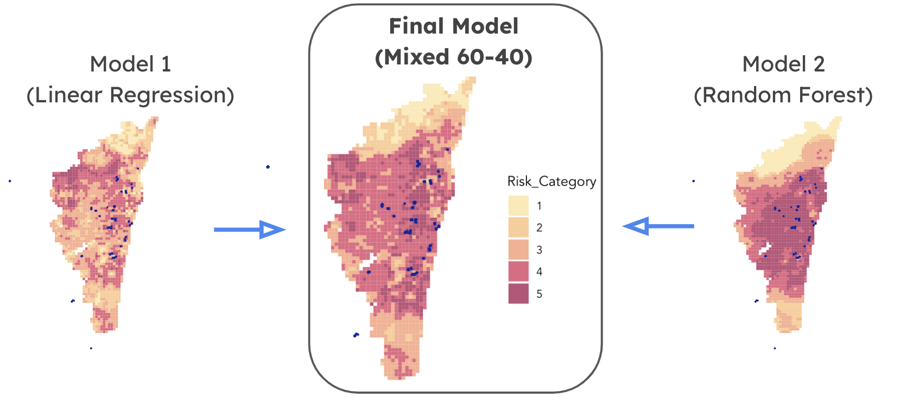
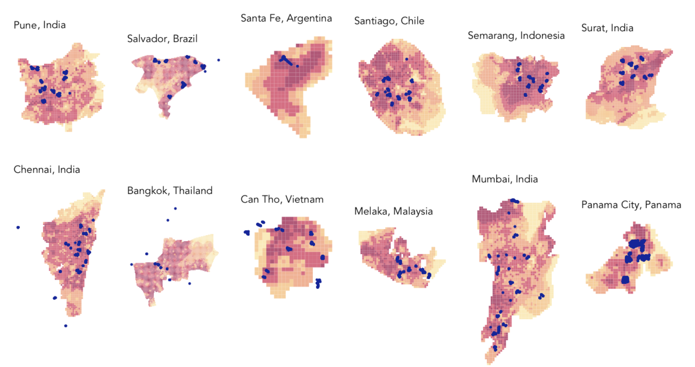

What if marine pollution could be curbed at its urban source?
What if we could predict the probability of presence of urban marine litter?
Urban Ocean Marine Litter Assessment
Interact with the dashboard below ↓
The Challenge
Litter accumulation in marine ecologies poses significant cyclical health, biodiversity, and climate risks. It is estimated that 11 million metric tons of plastic waste enter the ocean every year, and this number expected to triple by 2040. Originating in urban areas, this trash accumulation poses a systemic issue in developing countries with lacking waste disposal systems and recycling programs. This often disproportionately impacts vulnerable coastal dwellers and fisherman who heavily rely on the marine ecosystem.
Urban Ocean, a program by Ocean Conservancy has been developing initiatives that mitigate marine pollution, assess waste management, and enable cities to address ocean plastics and resilience. Site selection of pilot sites is made difficult due to lacking information around litter which makes it difficult for Urban Ocean’s zero-waste pilot to continue to make strides in reducing marine litter.
The Solution
This project aims to navigate zero-waste siting in areas facing bleak marine litter conditions through geospatial machine learning. We present, for Urban Ocean managers, a web-based dashboard with litter data metrics, demographic metrics, and a litter accumulation risk site-selection tool serving the 12 urban ocean cities in siting zero-waste pilots.
Data analysis

While conducting our analysis it was difficult to unify datasets across geographies. We used global datasets and used proxies like proximity to restaurant and shops in lieu of social behavior datasets. We then used a fishnet grid (described above) to model risk and aggregate and visualize data in ewach cell across all cities.



Site selection
To facilitate playgrounds that have existing play equipment, we first looked at all elementary and middle schools in Philadelphia. We then looked at the playgrounds across Philadelphia and narrowed down to all that serve this age group of 2-12 years. Next, we identified all playgrounds within a 0.1 mile radius of a school. To test our pilot, we chose a school closer to base called the Albert M. Greenfield playground.


Technical Components
Interactive Playground Light and sound to add a digital layer of fun and excitement to old playground equipment
Interactive Lots Light and sound to add a layer of fun and excitement to abandoned parking lots used as play areas for kids
Interact & Learn Digital sensors bring education to life at the playground from interactive science installations to take-home Arduino kits, kids can learn about health and engineering as they play and get active